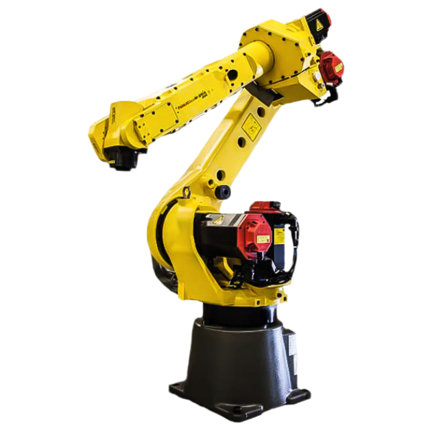
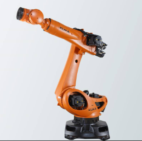
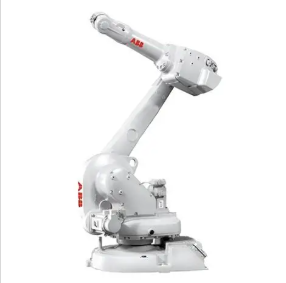

O QUE É UM ROBÔ ARTICULADO?
O robô articulado é o tipo mais comum na indústria pesada. Possui múltiplas juntas rotativas (geralmente seis eixos), simulando o braço humano: ombro, cotovelo e punho. Oferece flexibilidade, amplo alcance e acesso a orientações complexas, sendo ideal para tarefas que exigem precisão e versatilidade.
Sua estrutura permite movimentos em várias direções, cobrindo um grande volume de trabalho sem necessidade de deslocamento da base. Por isso, é amplamente utilizado em soldagem, pintura, montagem e manuseio de peças.
Principais características: 6 graus de liberdade, alta repetibilidade e grande carga útil.
ESPECIFICAÇÕES TÉCNICAS
PRINCIPAIS APLICAÇÕES
- Soldagem a arco e ponto
- Pintura automotiva
- Manuseio de materiais pesados
- Rebarbação e acabamento
- Montagem complexa
- Paletização
MODELOS POPULARES
Fabricantes de referência no mercado

FANUC M-20iA / R-2000iC
Fabricante: FANUC (Japão)

KUKA KR QUANTEC
Fabricante: KUKA (Alemanha)

ABB IRB 6700
Fabricante: ABB (Suíça/Suécia)